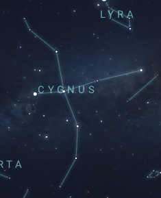
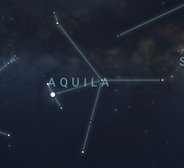
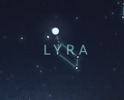
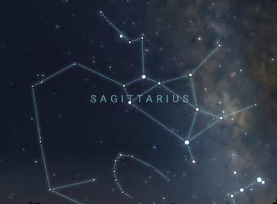
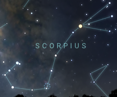
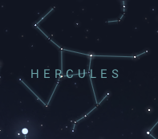

| Constellation | Description | Image |
|---|---|---|
| Cygnus | Cygnus, also known as the "Swan", is one of the most well-known summer constellations. Deneb, Cygnus's brightest star, makes up one of the vertices for the "Summer Triangle" (A triangle composed of the major stars Deneb, Vega, and Altair). |  |
| Aquila | Aquila, also known as the "Eagle", can be found to the right of Cygnus. It contains Altair, one of the points forming the Summer Triangle. Altair is also one of the closest stars visible to the naked eye. |  |
| Lyra | Lyra, also known as the "Harp", is a small constellation north of Cygnus and Aquila. With its brightest star Vega, it completes the Summer Triangle. |  |
| Sagittarius | Sagittarius, also known as the "Archer", is one of the prettiest constellations as it resides in the center of our Milky Way. It has a unique tea-pot shape, which makes it easy to identify, and is also one of the zodiac constellations. |  |
| Scorpius | Scorpius, also known as the "Scorpion", is one of the most distinct constellations because of its unique shape and bright stars. In the center is the red supergiant Antares, which has around the same brightness and colour as Mars (don't get confused). Like Sagittarius, Scorpius also lies in the center of the Milky Way, and is a zodiac constellation. |  |
| Hercules | Hercules, also known as the "Strongman", has a distinct ninja-star shape. It is the fifth largest constellation in the sky, however with its dim stars, it can sometimes be hard to find. |  |
For more information, go to stellarium.org.
Back to top.
Copyright © 2023 Andrew Li